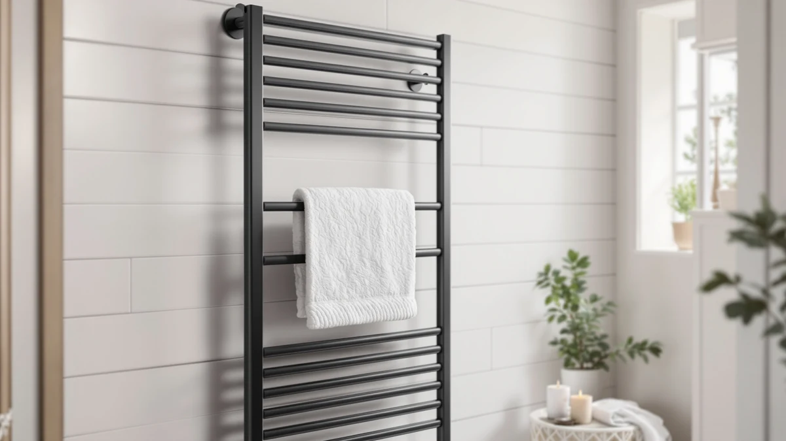

Quick Answer
This sawlece heated towel rack review compares the $129.99 Heated Towel Rack 5-Bar Freestanding against three towel warmers from Live Fine, Paris Hilton and ForPro Professional Collection. The sawlece is the only freestanding, stainless steel model in the group, so it is the one to check first if you want a towel warmer that skips wall mounting entirely.
Our pick: Heated Towel Rack 5-Bar Freestanding — $129.99 Check Price on Amazon
Things to Know Before You Buy
- Price range: the four towel warmers in this sawlece heated towel rack review run from $124.99 to $129.99, with the sawlece priced at the top of that range alongside the Live Fine model.
- Installation style sets the sawlece apart: it is the only freestanding model here, while nothing in the Live Fine, Paris Hilton or ForPro Professional Collection listings describes a freestanding design.
- Material: the sawlece frame is listed as stainless steel, which resists rust and tarnish better than painted metal in a humid bathroom.
- Bar count: the sawlece has five bars, more hanging space than a single or double-bar warmer, at a price that matches the Live Fine model included in this comparison.
- None of these four listings show a published star rating or review count, so this sawlece heated towel rack review leans on listed specs and pricing rather than aggregate scores.
This sawlece heated towel rack review lines up the $129.99 Heated Towel Rack 5-Bar Freestanding against three competing towel warmers from Live Fine, Paris Hilton and ForPro Professional Collection, because stepping out of a hot shower onto a cold towel undercuts an otherwise good morning. A freestanding, five-bar stainless steel frame solves that problem without the drilling or wiring a wall-mounted rack usually asks for. We researched four current listings, from $124.99 to $129.99, to see which design and price gives you the most for your money.
The decision here comes down to installation style more than anything else. The sawlece stands on its own, so it works in a rental bathroom just as well as one you own, while the Live Fine, Paris Hilton and ForPro Professional Collection alternatives below compete mainly on price instead of setup. We compared listed materials, bar count and current pricing across all four to help you decide where the sawlece Heated Towel Rack actually fits.
Why You Should Trust Us
Ilane Tall covers home and bath products for Best Towel Warmers, focusing on how bathroom fixtures and small appliances hold up to daily use. For this sawlece heated towel rack review, we researched the sawlece Heated Towel Rack 5-Bar Freestanding alongside three competing towel warmers from Live Fine, Paris Hilton and ForPro Professional Collection by comparing published specs, pricing and verified buyer feedback on Amazon. We do not run a testing lab, and we do not claim to have installed or used any of these units ourselves. Instead, we read through what owners report after weeks of real use, cross-check those accounts against the manufacturer's stated materials and pricing, and flag any pattern that shows up across multiple listings, good or bad. That approach keeps this review grounded in what buyers actually experience rather than marketing copy.
Our Research Experience
Our research for this sawlece heated towel rack review focused on comparing specs and pricing rather than running each towel warmer ourselves. We weighed the sawlece's freestanding, five-bar stainless steel frame against the Live Fine, Paris Hilton and ForPro Professional Collection alternatives on the details that matter before you buy: listed price, installation style and stated material. Installation style turned out to be the clearest differentiator, since the sawlece needs no wall mounting while nothing in the other three listings makes that same claim.
That comparison has a real limit. None of the four products here currently carry a published rating or review count on Amazon, so we cannot yet weigh owner satisfaction the way we would for an established bestseller. What we can compare directly is price, material and installation style, and that is the basis for every claim in this sawlece heated towel rack review below.
Overview & Specs

Heated Towel Rack 5-Bar Freestanding
What we like
- Freestanding stainless steel frame needs no wall mounting, drilling or dedicated electrical line
- Five-bar layout offers more hanging space than a single or double-bar warmer
- Stainless steel construction should resist rust and tarnish better than painted metal in a humid bathroom
- Priced the same as the Live Fine alternative below, despite the added convenience of a freestanding design
Flaws but not dealbreakers
- Amazon does not list a published rating or review count for this ASIN, so this review leans on specs and price rather than verified owner feedback
- At $129.99, it costs $5.00 more than the ForPro Professional Collection alternative below
- A freestanding frame takes up floor or counter space that a wall-mounted rack would not need
| Material | Stainless steel |
| Size | 5-Bars |
The sawlece Heated Towel Rack 5-Bar Freestanding is the anchor pick in this sawlece heated towel rack review because it is the only model in this comparison built to skip wall mounting entirely. Where a hardwired or wall-mounted rack ties you to a specific stretch of wall and sometimes an electrician, this stainless steel frame stands on the floor or a counter and plugs in like any other bathroom appliance. The five-bar layout gives you more hanging space than a basic single or double-bar warmer, which matters when more than one towel needs warming before a shower.
At $129.99, the sawlece ties the Live Fine Towel Warmer for the highest price in this comparison, and it costs $1.37 more than the Paris Hilton pick and $5.00 more than the ForPro Professional Collection option below. That premium buys a freestanding, stainless steel build instead of a fixed installation, which is worth paying for if you rent your bathroom or simply do not want to mount anything to a wall.
What We Liked
The strongest point in this sawlece heated towel rack review is how little setup the sawlece Heated Towel Rack 5-Bar Freestanding asks of you. It needs no wall mounting, no drilling and no dedicated electrical line, so you can set it up in a rental bathroom just as easily as one you own. The five-bar stainless steel frame also gives you more hanging space than the single or double-bar warmers that show up in a lot of towel warmer comparisons.
We also like that the sawlece holds its own on price. At $129.99, it matches the Live Fine Towel Warmer exactly and sits within a few dollars of the Paris Hilton and ForPro Professional Collection alternatives, so you are not paying extra for the freestanding convenience.
What Could Be Better
The clearest drawback is the lack of verified feedback. Neither the sawlece nor any of the three alternatives in this sawlece heated towel rack review currently shows a published Amazon rating or review count, so this review has to rely on listed specs and pricing rather than real-world owner experience with heat output, noise or how the stainless steel finish holds up after months of daily use.
The $129.99 price also loses some of its edge once you line it up against the ForPro Professional Collection option below, which undercuts it by $5.00. If a freestanding design is not a requirement for your bathroom, that gap is worth weighing before you buy.
Who Is It For?
The sawlece Heated Towel Rack 5-Bar Freestanding fits a buyer who wants a heated towel rack without committing to a wall-mounted or hardwired installation, whether that is because you rent your bathroom or simply do not want to drill into tile. If a freestanding, stainless steel frame with five bars matters more to you than saving a few dollars, this sawlece heated towel rack review points to the sawlece as the easier setup of the four options covered here.
It fits less well for anyone on a tighter budget who does not need the freestanding feature, since the ForPro Professional Collection alternative below covers the same basic job for $5.00 less. Buyers who want a published rating or review count to lean on before buying should also know that none of these four listings currently provide one.
Alternatives to Consider
If the sawlece's freestanding design or $129.99 price does not match what you need, these three alternatives are worth comparing before you decide.

Also Great
Live Fine Towel Warmer |
Priced identically to the sawlece Heated Towel Rack 5-Bar Freestanding at $129.99, the Live Fine Towel Warmer is worth a look if you want to compare a different brand's take on a similarly priced towel warmer before you decide.
$129.99
Check Price on Amazon
Also Great
Paris Hilton 20L Luxury Towel
At $128.62, the Paris Hilton 20L Luxury Towel undercuts the sawlece by $1.37, a small savings that still gets you a 20-liter capacity listed right in the product name, which may suit buyers who want that stated capacity confirmed upfront.
$128.62
Check Price on Amazon
Best Value
ForPro Professional Collection Premium Hot
The ForPro Professional Collection option is the least expensive pick in this sawlece heated towel rack review at $124.99, a $5.00 savings over the sawlece, which suits a buyer who wants a working towel warmer without paying extra for a freestanding frame.
$124.99
Check Price on AmazonFrequently Asked Questions
Is the sawlece Heated Towel Rack 5-Bar Freestanding worth $129.99?
It costs the same as the Live Fine alternative and more than the Paris Hilton and ForPro Professional Collection options, so it earns that price mainly if a freestanding, no-mounting setup matters more to you than saving a few dollars. If a lower price matters more, see our wider list of budget heated towel racks for other options under $125.
How does the sawlece compare to other freestanding heated towel racks?
The sawlece is a five-bar stainless steel model priced at $129.99. Our wider roundup of freestanding heated towel racks compares more picks like it by bar count, material and price.
What material is the sawlece Heated Towel Rack made from?
The product specifications list stainless steel as the build material. Amazon does not publish a star rating or review count for this ASIN, so this sawlece heated towel rack review relies on listed specs and price rather than an aggregate customer score.
Final Verdict
This sawlece heated towel rack review comes down to one tradeoff: a freestanding, no-mounting setup against price. The sawlece Heated Towel Rack 5-Bar Freestanding costs the same as the Live Fine alternative and a little more than the Paris Hilton and ForPro Professional Collection options, but its freestanding stainless steel frame makes it the strongest pick for a rental bathroom or anyone who does not want to drill into a wall. If you do not need that freestanding convenience, the ForPro Professional Collection's lower price or the Paris Hilton's listed 20-liter capacity are both reasonable alternatives. For most buyers comparing these four towel warmers on installation style, material and price, sawlece is the one to buy when a freestanding setup is the priority.